1과목: 응용역학
1. 그림과 같은 1/4 원 중에서 빗금부분의 도심 yo 는?
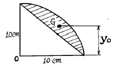
2. 다음 그림과 같은 변단면 Cantilever 보 A점의 처짐을 구하면?
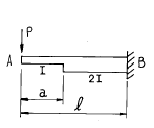
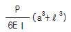
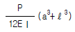
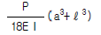
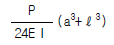
3. 그림과 같은 강봉이 2개의 다른 정사각형 단면적을 가지고 P하중을 받고 있을 때 AB가 1500kgf/cm2의 수직응력 (Nomal stress)을 가지면 BC에서의 수직응력은 얼마인가?
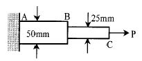
4. 단면에 전단력 V=75tonf가 작용할 때 최대 전단응력은?
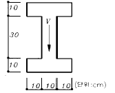
5. 단면 2차 모멘트가 I이고 길이가 ℓ인 균일한 단면의 직선상(直線狀)의 기둥이 있다. 그 양단이 고정되어 있을 때 오일러(Euler) 하중은? (단, 이 기둥의 영(Young)계수는 E 이다.)
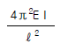
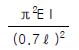
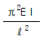
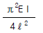
6. 어떤 인장부재를 시험하였더니 그 부재의 축신장도는 1.14 x 10-3 이었고 횡수축도 (橫收縮度)는 3.42 x 10이었다. 이 부재의 프와송(Poisson)의 비(ν)는?
7. 다음 그림과 같은 강봉의 양끝이 고정된 경우 온도가 30℃ 상승하면 양끝에 생기는 반력의 크기는? (단, E = 2.0×106 kgf/cm2, α = 1.0×10-5 (1/℃)이다.)
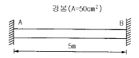
8. 그림과 같은 내민보에서 C점의 휨 모멘트가 영(零)이 되게 하기 위해서는 x가 얼마가 되어야 하는가?
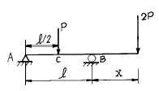
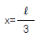
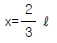
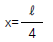
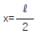
9. 그림과 같은 게르버보의 A점의 휨모멘트는?
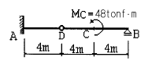
10. 길이 10m인 단순보 중앙에 집중하중 P = 2tonf가 작용할 때 중앙에서의 곡률 반지름 R 은? (단, I = 400 ㎝4, E= 2.1×106 kgf/cm2 임)
11. 그림과 같은 단면의 주축에 대한 단면 2차 모멘트가 각각 Ix = 72㎝4, Iy = 32㎝4 이다. x축과 30° 를 이루고 있는 u 축에 대한 단면 2차 모멘트가 Iu = 62㎝4 일 때 v축에 대한 단면 2차 모멘트 Iv 는?
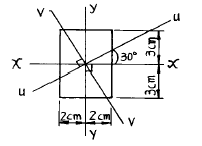
12. 그림과 같은 부정정보에 집중 하중이 작용할 때 A점의 휨 모멘트 MA를 구한 값은?
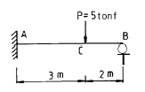
13. 그림과 같은 강재(steel) 구조물이 있다. AC, BC 부재의 단면적은 각각 10 cm2, 20 cm2 이고 연직하중 P = 6tonf 이 작용할 때 C점의 연직처짐을 구한 값은? (단, 강재의 종탄성계수는 2.⑤× 106 kgf/cm2 이다.)
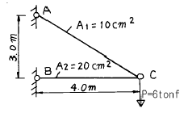
14. 그림과 같이 3활절(滑節)아아치에 등분포 하중이 작용할 때 휨모멘트도 (B.M.D)로서 옳은 것은?
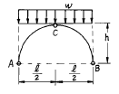
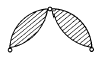
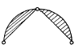
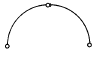
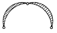
15. 그림과 같은 라멘 구조물의 A점에서 불균형 모멘트에 대한 부재 A1의 모멘트 분배율은?
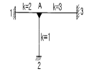
16. 다음 트러스에서
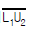
부재의 부재력은?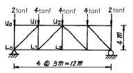
17. 다음 그림에서 처음에 P1이 작용했을 때 자유단의 처짐 δ 1이 생기고, 다음에 P2를 가했을 때 자유단의 처짐이 δ 2만큼 증가되었다고 한다. 이 때 외력 P1이 행한 일은?
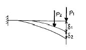
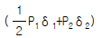
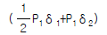
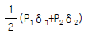
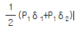
18. 그림의 AC, BC에 작용하는 힘 FAC, FBC 의 크기는?
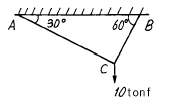
19. 정사각형의 목재 기둥에서 길이가 5m라면 세장비가 100 이 되기 위한 기둥단면 한 변의 길이로서 옳은 것은?
20. 재질과 단면이 같은 다음 2개의 외팔보에서 자유단의처짐을 같게 하는 P1/P2 의 값은?
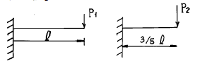
2과목: 측량학
21. 방위각 265° 에 대한 측선의 방위는?
22. 1/10,000의 지형도 제작에서 등고선 위치오차가 0.3mm, 높이 관측오차가 ± 0.2mm 로 하면 등고선 간격은 최소한 몇 mm 이상으로 해야 하는가?
23. 단곡선을 설치하기 위하여 교각(I)은 60° , 외선 길이 (E)는 15m로 할 때 곡선길이는?
24. 50m 의 스틸(steel)자로 4각형의 변장을 측정한 결과 가로, 세로 모두 30.00m 였다. 나중에 이 스틸자의 눈금을 기선척에 비교한 결과 50m 에 대해 1cm 늘어난 것을 발견했다. 이 때의 적오차는?
25. 우리나라의 수준측량에 있어서 1등 수준점의 왕복허용 오차는 얼마인가? (단, L은 편도거리(km)이다)
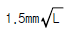
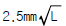
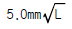
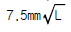
26. 축척 1/1,500 도면상의 면적을 축척 1/1,000으로 잘못 측정하여 24,000m2 를 얻었을 때 실제 면적은?
27. 다음 그림의 면적을 심프슨(Simpson) 제1법칙을 이용하여 구하면 얼마인가?
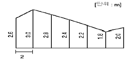
28. 초점거리 15cm 인 카메라로 경사각 30° 로 촬영된 사진상에 연직점 n과 등각점 j와의 거리는?
29. 교각 I=120° , 곡선반경 R=200m인 단곡선에서 교점 IP의 추가거리가 1439.25m일 때 곡선시점 BC의 추가거리는?
30. 거리 100m에 대한 스타디아선의 읽기오차가 0.5cm일때 100m 떨어진 지점을 시거측량한 결과 고도각이 15° 였다면 시거측량에 의한 고저차의 측정오차는? (단, K=100, C=0 이다)
31. 축척 1/10,000로 촬영한 수직사진이 있다. 사진의 크기를 23㎝× 23㎝, 종중복도를 60%로 하면 촬영기선의 길이는?
32. Geoid에 대한 설명중 틀리는 것은?(오류 신고가 접수된 문제입니다. 반드시 정답과 해설을 확인하시기 바랍니다.)
33. 지구상의 어떤 점에서 중력방향에 90° 를 이루는 평면은 무슨 면인가 ?
34. 1/50,000 국토기본도에서 표고 490m의 지점과 표고 3⑤m 지점 사이에 들어가는 주곡선의 수는?
35. 거리측정에서 생기는 오차중 우연오차에 해당되는 것은?
36. 100m2의 정방형의 토지의 면적을 0.1m2까지 정확하게 구하고자 한다면 이에 필요한 거리관측정도는?
37. 한 측선의 자오선(종축)과 이루는 각이 60° 00' 이고 계산된 측선의 위거가 -60m 이고 경거가 -103.92m 일 때 이 측선의 방위와 길이를 구한 값은?
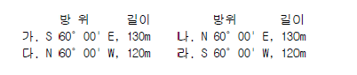
38. 유속측정에서 부자를 사용할 때 직류부의 유하거리는 다음중 어느 것이 가장 적당한가?
39. 노선의 곡선설치에 있어서 반경 R=500m, 노면마찰계수 f=0.1, 편구배 i=4% 일때 최대주행 속도 V는 얼마로 해야 하는가?
40. 단곡선 설치에 있어서 교각 I = 60°, 반경 R = 200 m, B.C = No.8 + 15m (20m x 8 + 15m)일 때 종단현에 대한 편각은 얼마인가?
3과목: 수리학 및 수문학
41. 그림과 같은 원형 관로에서 D1 = 300㎜, Q1 = 200ℓ /sec 이고 D2 = 200㎜, V2 = 2.5m/sec 인 경우 D3 = 150㎜에서의 유량 Q3 는?
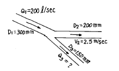
42. 다음 그림에서 A수조의 유속을 무시할 경우 유량 Q는? (단, 오리피스의 면적 a = 0.1m2, 유량계수 C = 0.6 임)
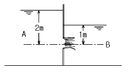
43. 그림과 같이 댐 여수로상에 설치된 회전식 수문의 꼭지점까지 물이 가득차 있다. 수문에 용하는 정수압의 수평분력과 연직분력을 각각 구하면? (단, 수문의 직경과 길이는 각각 2m임)
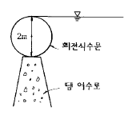
44. 동수경사선에 관한 설명 중 옳은 것은?
45. 바닥으로부터 거리가 y(m)일 때의 유속이 v = -4y2+y (m/s) 인 점성유체 흐름에서 전단력이 0가 되는 지점까지의 거리는?
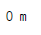
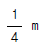
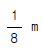
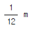
46. 설계홍수량 계산에 있어서 합리식의 적용에 관한 설명 중 옳지 않은 것은?
47. 수문기상에 대한 다음 설명 중 옳지 않은 것은?
48. 가능최대강수량(Probable Maximum Precipitation)을 설명한 것 중 옳지 않은 것은?
49. 어느 관측소의 자기우량기록이 다음 표와 같을 때 10분 지속 최대 강우강도는 ?
50. 다음 그림에서 P1과 평형을 이루도록 하기 위해 P2에 작용 시켜야 할 힘은?
51. 합성단위도의 모양을 결정하는 인자가 아닌 것은?
52. 관수로에서 흐름이 층류인 경우 마찰계수 f는?
53. 개수로 흐름에 관한 다음 설명 중 틀린 것은?
54. 그림과 같이 A에서 분기된 관이 B에서 다시 합류하는 경우, 관Ⅰ과 관Ⅱ 의 손실수두를 비교하면?
55. 다음과 같은 굴착정(artesian well)의 유량을 구하는 식은? (단, R:영향원의 반지름)
56. 그림과 같은 직사각형 수로에서 수로 경사가 1/1,000인 경우 수로 바닥과 양벽면에 작용하는 평균 마찰응력은?
57. 다음 중 비에너지를 옳게 나타낸 것은? (단, He=비에너지, h=수심, V=유속, Q=유량, A=단면적, g=중력가속도, α =에너지보정계수이다.)
58. 작은 오리피스에서 단면 수축계수 Ca, 유속계수 Cv, 유량 계수 C 와의 관계가 옳게 표시 된것은?
59. 유속계수가 0.82인 직경 2㎝의 표준단관의 수두가 2.1m일 때 1분간 유출량은?
60. 수심 2m, 폭 4m 인 콘크리트 직사각형수로의 유량은? (단, 조도계수 n = 0.012, 경사Ⅰ= 0.0009 임)
4과목: 철근콘크리트 및 강구조
61. 강도설계법에 의한 전단 설계에 대한 설명 중 틀린 것은? (단, d = 유효 깊이, bw = 복부폭, fck = 콘크리트의 설계 기준 강도, Vu = 계수전단력, φVc = 콘크리트에 의한 전단강도)
62. PS강재의 인장응력 fp = 11,000kgf/cm2 콘크리트의 압축응력 fc = 80kgf/cm2, 콘크리트의 크리프 계수 φt = 2.0, n = 6일 때 크리프에 의한 PS강재의 인장응력 감소율은 얼마인가?
63. 인장을 받는 표준 갈고리의 정착에 대한 기술 중 잘못된 것은? (단, db는 철근의 공칭지름)
64. 철근 콘크리트 부재의 처짐은 지속하중 상태하에서 시간이 경과함에 따라 계속적으로 증가하게 된다. 장기 처짐에 가장 적게 영향을 미치는 것은?
65. 4변에 의해 지지되는 2방향 슬래브 중에서 1방향 슬래브로 보고 계산할 수 있는 경우는? (단, L: 2방향 슬래브의 장경간, S: 2방향 슬래브의 단경간)
66. 고장력 볼트를 사용한 이음 종류가 아닌 것은?
67. 유효깊이에 대한 순경간의 비(ln/d)가 5보다 작고 부재의 상부 또는 압축면에 하중이 작용하는 휨부재는?
68. 옹벽의 활동에 대한 저항력은 옹벽에 작용하는 수평력의 몇 배 이상이어야 하는가?
69. 폭 b = 30 cm, 유효 깊이 d = 40 cm, 높이 h = 55 cm, 철근량 As = 48cm2인 보의 균열 모멘트 Mcr의 값은? (단, fck = 210 kgf/cm2이다.)
70. 콘크리트설계기준의 요건에 따르면, fck = 380 kgf/cm2일때의 직사각형응력분포의 깊이를 나타내는 β 1의 값은 얼마인가?
71. 아래와 같은 맞대기 이음부에 발생하는 응력의 크기는? (단, P = 36,000kgf, 강판두께 12mm)
72. 그림과 같은 임의 단면에서 등가 직사각형 응력분포가 빗금친 부분으로 나타났다면 철근량 As는 얼마인가? (단, fck=210kgf/cm2, fy=4000kgf/cm2)
73. 강도설계에서 fck = 350㎏f/cm2 , fy = 3,500㎏f/cm2 를 사용하는 단철근보에 사용할 수 있는 대 인장철근비는?
74. 다음 띠철근 기둥이 최소 편심하에서 받을 수 있는 설계 축하중강도(φPn(max))는 얼마인가? (단, 축방향 철근의 단면적 Ast = 18.65 cm2, fck = 280kgf/cm2, fy = 3,000 kgf/cm2이고 기둥은 단주이다.)
75. 부재의 순단면적을 계산할 경우 지름 22mm의 리벳을 사용 하였을 때 리벳 구멍의 지름은 얼마인가?(오류 신고가 접수된 문제입니다. 반드시 정답과 해설을 확인하시기 바랍니다.)
76. 계수 하중에 의한 단면의 계수 모멘트가 Mu = 35tonf·m 인단철근 직사각형 보의 유효깊이는? (단, ρ =0.0135, b=30cm, fck=240kgf/cm2, fy=3000kgf/cm2)
77. 보의 파괴형상 중 설계시 반드시 따르도록 하는 것은?
78. 철근콘크리트 구조물의 강도설계법에서 사용되는 강도감 소계수에 대한 다음 설명 중 잘못된 것은?
79. 그림과 같은 포스트텐션보에 120tonf의 초기 프리스트레스를 도입했다. w=2tonf/m 의 하중이 작용할 때 지간 중앙단면에 생기는 콘크리트의 응력은 얼마인가? (단, 손실은 15% 로 가정하고 자중은 무시한다.)
80. 직사각형 보에서 전단철근이 부담해야 할 전단력 Vs가 30tonf일 때 전단철근의 간격 s는 최대 얼마 이하라야 하는가? (단, 수직스터럽의 단면적 Av=7.0cm2, bw=35cm, d=60cm, fck=210kgf/cm2, fy=4,000kgf/cm2이다.)
5과목: 토질 및 기초
81. 물로 포화된 실트질 세사(細砂)의 N치를 측정한 결과 N = 33이 되었다고 할때 수정 N치는? (단,측정지점까지의 롯드(Rod)길이는 35m이다.)
82. 모래지반에 30cm× 30cm의 재하판으로 재하실험을 한 결과 10t/m2의 극한 지지력을 얻었다. 4m× 4m의 기초를 설치할때 기대되는 극한지지력은?
83. 연약점성토층을 관통하여 철근콘크리트 파일을 박았을 때 부마찰력(Negative friction)은? (단, 이때 지반의 일축압축강도 qu=2t/m2, 파일직경 D=50㎝, 관입깊이 ℓ =10m 임)
84. 습윤단위중량이 2.0t/m3, 함수비 25%, 비중이 2.7인 경우 건조밀도와 포화도는?
85. 선행압밀하중을 결정하기 위해서는 압밀시험을 행한 다음 어느 곡선으로부터 구할수 있는가?
86. Terzaghi는 포화점토에 대한 1차 압밀이론에서 수학적 해를 구하기 위하여 다음과 같은 가정을 하였다. 이 중 옳지 않은 것은?
87. 다짐에 대한 다음 사항중 옳지 않은 것은?
88. 말뚝재하시험시 연약점토지반인 경우는 pile의 타입 후20 여일이 지난 다음 말뚝재하시험을 한다. 그 이유는?
89. 다음 그림에서 한계동수구배를 구하여 분사현상에 대한 안전율을 구하면?(단,모래의 Gs = 2.65, e = 0.65이다.)
90. 노건조된 점토시료의 중량이 12.38g, 수은을 사용하여 수축한계에 도달한 시료의 용적을 측정한 결과가 5.98cm3 일 때의 수축한계는? (단,비중은 2.65이다.)
91. 물의 표면장력 T=0.075 g/㎝, 물과 유리관벽과의 접촉각 이 0° , 유리관의 지름 D=0.01㎝ 일때, 모관수의 높이 hc는?
92. 어떤 흙의 전단실험결과 C=1.8kg/cm2, φ=35o, 토립자에 작용하는 수직응력 σ =3.6kg/cm2일 때 전단강도는?
93. 내부 마찰각 φ=0인 점토로 일축압축 시험을 시행하였다. 다음 설명중 옳지 않은 것은?
94. 표준관입시험(SPT)에 대하여 옳지 않은 것은?
95. 다음중 Rankine 토압론의 기본가정에 속하지 않는 것은?
96. rod에 붙인 어떤 저항체를 지중에 넣어 타격관입, 인발 및 회전할 때의 흙의 전단강도를 정하는 원위치 시험은?
97. 다음의 지반개량공법 중 탈수(脫水)를 주로하는 공법이 아닌 것은?
98. 그림과 같은 점토층의 압밀속도를 계산한 결과 90%압밀에 소요되는 시간이 5년이었다. 만일 암반층 대신 모래층이 존재한다면 압밀소요 시간은?
99. 내부마찰각 φu = 0, 점착력 Cu = 4.5t/m2, 단위중량이 1.9t/m3되는 포화된 점토층에 경사각 5°로 높이 8m인 사면을 만들었다. 그림과 같은 하나의 파괴면을 가정했을때 안전율은? (단, ABCD의 면적은 70m2이고, ABCD의 무게중심은 O점에 서 4.5m거리에 위치하며, 호 AC의 길이는 20.0m이다.)
100. 지표면에 집중하중이 작용할때 지중연직응력(地中鉛直應力)에 관한 다음사항중 옳은 것은? (단,Boussinesq이론을 사용)
6과목: 상하수도공학
101. 효율이 0.8인 펌프 2대를 이용하여 취수탑에서 100,000m3/일의 수량을 손실수두를 포함하여 20m 높이에 있는 도수로에 끌어 올리려 한다. 펌프 한대의 소요동력 은 몇 kW가 되는가?
102. 다음중 음료수의 수질기준에 부적합한것은?
103. 취수지점(수원)으로부터 소비자까지 전달되는 일반적 상수도의 구성순서로 올바른 것은?
104. 활성슬러지법에서 MLSS란 무엇을 뜻하는가?
1⑤. 하천 밑을 통과하는 역사이펀 관로가 있다. 이 관로의 길이는 500m, 관경은 500mm이고, 경사는 0.3%라고 한다. 또 한 이 관의 Manning 조도계수 n값은 0.013이라고 한다. 역사이펀 관로의 기타 미소손실이 총 5cm수두라고 할때 상기의 관로에서 일어나는 총손실수두와 유량은?
106. 펌프의 공동현상을 방지하기 위한 흡입양정의 표준으로 옳은 것은?
107. 하수관거 내에서의 부유물 침전을 막기 위하여 요구되는 최소 유속은 얼마인가?
108. 하수배제 방식에 관한 설명중 잘못된 것은?
109. 초산의 이온화 상수는 25℃에서 1.75絨10-5이다. 5℃에서 0.015M 초산용액의 pH는 얼마인가?
110. 활성슬러지법에서 BOD 용적 부하를 옳게 표현한 것은?
111. 그림과 같은 저수지에서 직경 500mm관으로 유량 0.2m3/s 를 저수지 수면에서 30m 되는 고지대로 압송한다. 고지대의 압력이 1.5kg/cm2를 유지하도록 하려면 펌프의 축마력은 얼마로 하여야 하는가? (단, 관의 길이는 2,000m, 마찰손실계수는 0.028, 펌프의 효율은 75%라고 함.)
112. 하수 처리방법 중 표준 활성슬러지법과 그 흐름도가 기본적으로 같은 것은?
113. 하천 및 저수지의 수질해석을 위한 수학적 모형을 구성하 고자 할때 가장 기본이 되는 수학적 방정식은 무엇에 기초로 하는가?
114. BOD가 60mg/ℓ 인 하수처리장 유출수가 5000m3/day의 비율 로 하천에 방류된다. 하수가 출되기 전 하천의 BOD는 2mg/ℓ 이며, 유량은 0.5m3/s이다. 하수처리장 유출수가 방류되는 순간 천수와 완전 혼합된다고 가정할 때 합류지점의 BOD농도는 얼마인가?
115. 수원(水源)에 관한 설명중 틀린 것은?
116. 오수관거의 최소 관경은 다음중 어느 것인가?
117. 하수의 최종 BOD가 5일 BOD의 1.8배라면 상용대수(밑수 10)를 사용할 때의 탈산소계수는 약 얼마인가 ?
118. Stokes의 침강속도를 구하는 식은? (단, Vs는 침강속도, ρ S및 ρ 는 토립자 및 물의 밀도, g는 중력가속도, μ 는 점성계수, d는 토립자의 입경)
119. 수돗물의 염소처리에서 잔류염소 농도를 0.4ppm 이상으로 강화해야 할 경우에 해당되지 않는 않은?
120. 다음은 관로시설의 설계시 계획하수량의 결정 내용이다. 잘못된 것은 ?